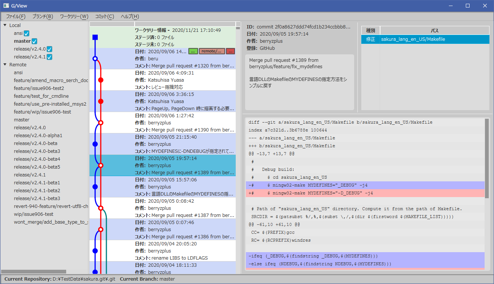

上の画面は、このブログの記事で作成中のgitクライアント gview のプロトタイプのスクリーンショットです。
まだ初期段階で、実用には程遠いのですが、プログラムを開発する中で、色々調べたこと、試したことがあります。 それを書き留めるために、このブログを作っています。
同じようなことを試している方、調べている方の参考になれば、と思っています。
gviewでは、大まかに次のような構成を目標にしています。